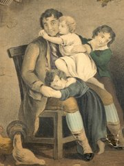
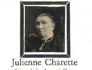

Again based on the information
passed on by Brother Jean-Benoît Charette, genealogist, here are the sixteen children of Jacques Charette and Théotiste Dubois,
including two sets of twins.
The information has been completed with the baptism and
marriage records found in the digitized Drouin collection.
Charles, born
April 16, 1837, in St-Jérôme, Terrebonne county. His godparents were
Joseph Dubois and Marguerite Varin, his maternal grandfather and his
paternal grandmother..
 Julienne,
born April 7, 1839, in St-Jérôme. Her godparents were Joseph Dubois and
Charlotte Papineau, her maternal grandparents. On November 21, 1865, in St-Sauveur, she married Augustin Goyer,
widower of Angélique Lauzon.
Olympe,
born May 9, 1842, in St-Jérôme. Her godparents were Pierre Dubois and Marie
Charette. On February 5, 1861, in St-Sauveur, she married Pierre
Laurin, son of Pierre and Marie Nadon.
Célina, born August
19, 1844, in St-Jérôme. Her godparents were Jean-Baptiste Gareau and
Thérèse David. On July 5, 1869, in St-Jérôme, she married
Maximim Mathe, son of Nicolas and Angélique Deschamps.
Olive, born August 7,
1846, in St-Jérôme. Her godparents were Pierre Cousineau and Apolline
Martineau. On September 21, 1868, in St-Sauveur, she married
Napoléon Paradis, son of Jean-Baptiste and Flavie Legault..
Herméline, twin,
born September 4,
1849, in St-Jérôme. Her godparents were Jean-Marie David and Angèle Cyr.
Godfroy, twin,
born September 4, 1849,
in St-Jérôme. His godparents were Pierre Charette and Olive Vézina. He
died on September 29, 1849.
Alphonse, born September
14, 1850, in St-Jérôme. His godparents were Jean-Baptiste Bériault
and Rosalie Charette. On February 25, 1873, at St-Joseph in
Montréal, he married Rosianne Miron, daughter of Antoine and Angèle Picotte.
|
Alphonse
is our ancestor of the 8th generation;
click the The 14 generations link in the
banner
to reach the site devoted to him |

|
Euphrosine, born
July 27, 1852, in St-Jérôme. Her godparents were Pierre Charette and
Pauline Godard.
Léocadie, born
June 25, 1854, in St-Sauveur-des-Monts. Her godparents were François
Gravel and Angélique Deschatelets. She died there on May 21, 1860.
Jacques, born May 28,
1856, in St-Sauveur-des-Monts. His godparents were Octave Marier and
Victoire Éthier. On September 18, 1877, in
St-Henri-des-Tanneries, he married Mathilda Ouimet, daughter of Magloire and
Marie Archambault. Mathilda had been born on January 1, 1858, in Ste-Rose.
Her godparents were Antonio Ouimet and Geneviève Dufour.
Edesse, twin,
born March 7, 1858, in St-Sauveur-des-Monts. Her godparents were Pierre
Bélanger and Angélique Cyr. On October 20, 1879, in
St-Henri-des-Tanneries, she married Joseph Bouffard, son of François and
Marcelline.
Joseph, twin,
born March 7, 1858, in
St-Sauveur-des-Monts. His godparents were Joseph Montigny and Desanges
Gravel. He died there on August 11, 1858.
Hélène, born January
2, 1861, in St-Sauveur-des-Monts. Her godparents were Pierre Audet and
Sophie Charette. On November 2, 1889, in St-Henri, she married Henri
Rousseau, son of Octave and Julie Lussier. The groom was a farmer in
Whitinsville, Massachusetts, so we can assume Hélène lived in the
United States. We know that our ancestor Alphonse used to get
"visitors from the States"; it was probably his sister
Hélène and her family.
Joseph-Henri, born
April 25, 1863, in St-Sauveur-des-Monts. His godparents were Pierre
Imbault and Julienne Charette. On October 10, 1887, in
St-Sauveur-des-Monts, he married Sarah
Brière, daughter of Joseph and Sarah Labelle. Then, on May
4, 1907, in St-Henri-des-Tanneries, he remarried, to Léa Vaillancourt, daughter of
Casimir and Marie des Neiges Vaillancourt.
|

|
A web visitor, pleased to have found the
photos on our public genealogy site, especially the one
of Alphonse Sr., sent us in return a photo of one of
Alphonse's brothers, Henri. Henri (the eldest)
poses with his son Agnus and his grandson Rolland. Henri
is the great-great-grandfather of that web
visitor. |
Élisa, born
February 3, 1865, in St-Sauveur-des-Monts. Her godparents were Benjamin
Charette and Marcelline Raymond dite Michaudville. On October 18,
1886,
she married Samuel Rousseau, son of Joseph and Julie Lussier. (Note
that Élisa signed her marriage record, a rare thing at the time).

|